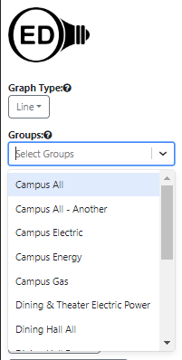
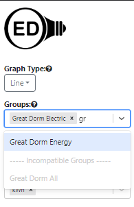

<div class="row">
	{% include_relative _version %}
	{% include help-sidebar OEDVersion=OEDVersion %}
	<div class="medium-8 medium-pull-4 columns" markdown="1">
	
	<h2 id="overview">Overview</h2>
	<p>A group in OED represents the aggregation (sum) of the meters and groups it represents. The following figure
		visually represents the ideas of a group in OED. It is the same as the one on the <a
			href="../exampleDescription/">example description page</a> that has more information about the example.
		The meters are on the left-hand side of the image in the blue rectangles and the groups are shown in the yellow
		rectangles. A line from a meter to a group indicates that the meter is a member of the group. A line from a
		group to a group indicates the group on the left is a member of the group on the right. Each group shows all of
		its members with the same color line. For example, "Dinning Hall All" contains the meter "Dining Hall Water" and
		the group "Dining Hall Energy" where they are connected by a pink line.</p>
	
	<p>The important idea behind groups is they allow a site to create arbitrary valid combinations that can represent
		the
		total usage of resources for an area of an organization. Consider these examples:</p>
	<ul>
		<li>The "Library Electric" group only contains the "Library Electric" meter. See the purple line. This shows
			that a group could only
			contain a single meter. While it may not be a great idea as it may confuse people, a group can have the
			same name as a meter.</li>
		<li>The "Great Dorm Electric" group contains the "Great Dorm 1st Floor Electric" meter and the "Great Dorm 2nd
			Floor
			Electric" meter so it would represent the sum or total electric usage for these two floors. See some of the
			black
			lines. This is an example of
			a
			group that only contains meters.</li>
		<li>The "Great Dorm Energy" group contains the "Great Dorm Gas" meter and the Great Dorm Electric" group. See
			some of
			the blue lines. As
			such, it
			represents the sum of the resources used by the gas for that building and both floors of electricity. It is
			an
			example of a group that contains both a group and meters. A group can contain an arbitrary number of meters
			and groups. This also demonstrates the mixing of units as the gas meter is B to you and the electric meters
			are kWh. A group can contain any combination of items as long as the units are compatible.</li>
		<li>Suppose there was a group that represented the entire campus that contained the meters of "Dining Hall
			Electric" and "Library Electric" along with the group "Dining Hall All", "Great Dorm All" and "Theater All".
			This is not
			a group that is shown in the figure. Such a group directly has the "Dining Hall
			Electric" meter and also
			includes the same meter through the "Dining Hall All" group. OED will never include a meter twice so the
			fact that
			a given meter shows up in different ways does not cause it to be double counted when it is used.</li>
	</ul>
	<p>Groups have the same options for graphing as meters which includes <a
			href="../areaNormalization/">normalization by area</a>, any compatible <a
			href="../graphingUnits/">unit</a> and <a href="../graphingRates/">rate</a>.</p>

	<h2 id="usage">Usage</h2>
	<p>Each graphic page has a dropdown menu for the available groups as shown in this figure:</p>
	
	<p>Note if the list of groups is long, you may need to scroll down to get to the one you want. You can do an
		incremental
		search for any group by typing in the input area at the top of the dropdown menu to limit the groups shown
		to the ones that match what you type. The search will occur anywhere in the group name (not just the start) and
		is not case
		sensitive. This can still be done when groups are already selected and shown at the top of the group dropdown.
		Note the normal
		separator between compatible and
		incompatible groups will not be shown during a search but the incompatible groups are still grayed out.
		This
		is
		shown in the next figure where "Great Dorm Electric" was already selected and "do" was typed in the dropdown to
		find "Great Dorm Energy".</p>
	
	<p>You can select any group by clicking on it so it shows up on the graphic and appears in the list at
		the
		top of the group dropdown menu. The choice of groups will
		remain as you change the graphic you are displaying. Note the group menu will be separated into two sections by
		the divider "----- Incompatible Groups -----" when the already selected "Unit" is not compatible with
		these groups. The incompatible groups are shown at the bottom of the menu and are grayed out so they
		cannot be selected. In the
		figure of above, the unit selected (cannot easily be seen) is "kWh" so the group "Great Dorm All"
		is grayed out in
		the bottom part of the menu because it contains a water meter that is not measuring energy. If the unit was
		changed to money then both groups could be selected because they both have a cost associated with them.</p>
	<p>If no meter or group is selected then the "Units" may be blank. In this case, when you select a group, its
		default graphing unit will become the "Units" for the graphic. Note that groups that do not have a default
		graphing unit cannot be selected until a compatible graphing unit is already selected.</p>
	<p>If you want to remove a group from being graphed, you click the "x" to the right of its name in the list at the
		top of the dropdown menu. One can also delete the last item on the selected list by using the delete key.</p>

	<h2 id="details">Details</h2>
	<p>The hope is that the name of a group gives you a good idea of what it represents. However, you may want to see
		the underlying groups and meters within a group. The <a href="../groupViewing/">Group Viewing page</a> can show
		this.</p>
	<p>If a meter in a group is missing data compared to other meters in the group then it is treated as zero.
		Basically
		this means that meters with missing data can under represent the usage due to the missing data. This includes
		the
		case when a meter does not have older or newer data in it. Note that if the graphic is showing hourly or daily
		data
		and the meter has some data in that time range then the value will correctly represent that time range for that
		value. The zero only shows up if there is no data for the meter across that time range. One would see the same
		effect if that meter was graphed individually.</p>
</div>
